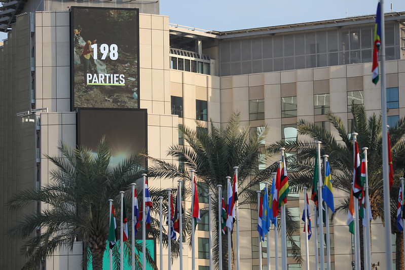
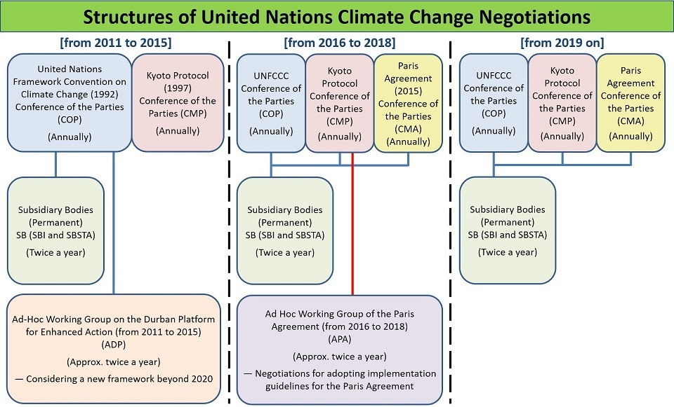
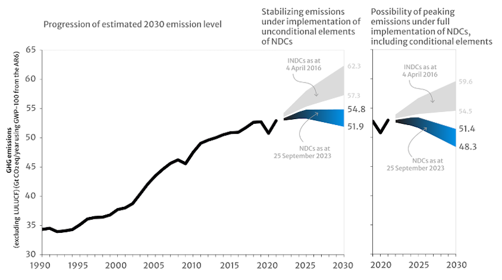

Yep. Your “delegates” put 198 Parties on the global expense account. In addition, there were 285 press conferences, 518 related ‘events’, and 195 exhibits. Plus, venues for COP29 and COP30 were finalized, so, like the party-goers at Burning Man, they decided that it was so much fun that they all should do it again next year. Someone should calculate the carbon footprint of these activities, I suppose, to see if their activity is contributing more to emissions than it’s removing!
I’ve been poking at this group of political operators for at least the past two years, and I’m human. So, maybe I’m taking potshots at the cool kids as someone who wasn’t invited into their clique. As a scientist, I should try to be open-minded. Plus, with all the paper and hot air that COP28 produced, real progress could be hidden in the details. The press (despite the number of press conferences) has been mainly covering the controversies, so I thought I’d look at “Is there any measurable progress on ‘healing earth’?”
As an aside, the press has latched on to the allegedly shocking and widely reported mention of “the beginning of the end of fossil fuels” in the draft final document. To my ear, this indicates how little influence engineers have had on the outcome—the “Duh!” is more apparent when you recast “fossil fuels” as “geologic carbon”. The core insight, one that’s taken this group 28 years to admit, is that digging carbon out of the ground and burning it changes the distribution of carbon between Earth and its atmosphere. Eventually, we will run out of stuff to burn. That’s not even high school science, people! The hard part isn’t what must happen. It’s how and when . To fail to address these questions collaboratively is, as I pointed out last time, a different flavor of climate denial.
It turns out that COP28 has a more detailed structure, such that it is a three-fer conference. The Conference coincided in space and time with CMP18 and CMA5, which don’t decode neatly into three words, but CMP monitors the Kyoto Protocol (now 18 years old, able to vote but not drink), and CMA monitors the Paris Agreement (just a toddler at 5). Both are treaties among countries in the international community that are intended to enforce emissions reductions. Here’s the org chart:

It probably makes the most scientific sense to look at the Paris group (CMA): They oversee the 1.5°C objective, President-designate Sultan Al Jaber’s “North Star”. There’s much more reading than I have time for, but the CMA added a new catchphrase to the climate nerd jargon: the “global stocktake”. In simple terms, this is a comprehensive but retrospective budget intended to enable “countries and other stakeholders to see where they’re collectively making progress toward meeting the goals of the Paris Agreement – and where they’re not. 1 ” As I’ve outlined previously, this is a bottom-up budget where each participant in the Paris Agreement reports specific data on a country-by-country basis. In addition, various NGOs have been asked to add detailed information to the collection so that missing data can be filled in.
The intention is to provide the best budget model possible. The modelers will be delighted! They’ll be able to predict with slightly more certainty when we need to be worried about digging stuff up to burn…Oh, wait, that was 300 years ago! Still, “you can’t manage what you can’t measure 2 ”, so I guess that’s a start. Every budget process has to start with a proposal, even if the final numbers are off. As a personal but relevant aside, I want to lose 20 pounds in 2024, and I have a plan to do so. It’s remarkably similar to my plan to lose 20 pounds in 2023!
For this week’s installment, let’s dig into one section that may shed light on our prospects if we remain on the current path. In particular, consider three paragraphs that come from a document released Wednesday entitled “Outcome of the first global stocktake” (II.A.18-20). The CMA:
Acknowledges that significant collective progress towards the Paris Agreement temperature goal has been made, from an expected global temperature increase of 4 °C according to some projections prior to the adoption of the Agreement to an increase in the range of 2.1–2.8 °C with the full implementation of the latest nationally determined contributions;
Expresses appreciation that all Parties have communicated nationally determined contributions that demonstrate progress towards achieving the Paris Agreement temperature goal, most of which provided the information necessary to facilitate their clarity, transparency and understanding;
Commends the 68 Parties that have communicated long-term low greenhouse gas emission development strategies and notes that 87 per cent of the global economy in terms of share of gross domestic product is covered by targets for climate neutrality, carbon neutrality, greenhouse gas neutrality or net zero emissions, which provides the possibility of achieving a temperature increase below 2 °C when taking into account the full implementation of those strategies;
Reading quickly, it sounds promising. But these paragraphs contain such weasely qualifying statements, like “according to some projections” and “all Parties have communicated,” that may simply be self-congratulation by those allegedly responsible. So, I wanted to do a little fact-checking.
A few questions:
-
Which projections before the Paris Agreement indicated a +4 C° increase?
-
What does a “full implementation” of the “latest nationally determined contributions” mean?
-
Do measurements since Paris indicate “significant collective progress”?
The Paris Agreement went into force on November 4, 2016, so let’s examine the predictions of the IPCC AR5 report, which is the reference point cited above. It turns out that the +4 C° increase comes from the most extreme “baseline” scenario referred to as RCP8.5 (RCP = “representative concentration pathway”, replaced by SSP5-8.5 in AR6). These are the worst-case “business as usual” projections, so it’s a low bar. The “progress” is aspirational and reiterates that if we reduce GHGs in the future, our prospects will improve. That was also true in 2016.
The phrase “nationally determined contributions” is a precise definition. Each country that signed the Paris Agreement determines its emissions on its own and reports its numbers to the UN. Then, these data are compiled to provide inputs for the modelers. Here’s a summary chart of these reports:

Essential points are (a) the distraction of LULUCF (which I firmly believe is bullshit) has been excluded, and (b) these are annual emissions in gigatonnes of CO2 3 per year based on what each country measures. So, the takeaway is optimistic: On the whole, countries are promising to reduce their intended emissions more than they were in 2016, to the point of possibly, conditionally, reversing the acceleration of emissions somewhat.
A few stark caveats: First, these are intentions . If you’ve ever been through a budgeting exercise, you’ll appreciate the difficulty of sticking to a budget once it’s written—the unexpected happens. The idiom is apt: The road to hell is paved with good intentions . A telling feature of the INDC (pre-2015) is in the Section “ Communications received from Parties in relation to other Parties’ INDCs. ” Back in 2015, Russia and Ukraine traded insults about which country could report on Crimea! In today’s context, the rhetorical question is, “Which of the parties accurately budgeted for the outbreak of war?” Surely, there are plenty of excess emissions from the battlefield that the two adversaries can argue further about, but that’s probably pretty low on the list of things they’re worrying about now. Regarding planetary physical chemistry, it doesn’t matter who gets credit or blame for them.
Second, the emissions are based on what countries measure. However, other factors in global warming are not projected at the level of a political boundary, like methane release from permafrost and emissions due to forest fires. More disturbingly, the claim of success by CMA is directly contradicted by the IPCC, which stated:
Parties to the Agreement have submitted Nationally Determined Contributions (NDCs) indicating their planned mitigation and adaptation strategies. However, the NDCs submitted as of 2020 are insufficient to reduce greenhouse gas emission enough to be consistent with trajectories limiting global warming to well below 2°C above pre-industrial levels (high confidence). 4
When the politicians misrepresent the scientists, that’s prima facie climate denial, people!
Third, while countries like the United States and those in the European Union have relatively transparent governments, countries like China and Russia do not. Since NDC numbers are self-reported, I’d argue that there is a much larger incentive to shade the numbers in your favor. It’s a bit like being allowed to grade your final exam before shredding it—If you flunked it, would you admit it to the world, particularly if everyone blamed you for your failure? I think that the NDC perspective overestimates the ethics of world leaders. Plus, it’s a treaty; treaties are enforced by goodwill and careful monitoring. This system is not currently set up for either, and the recourse is… War? Sanctions?
To the extent that engineering guidelines emerged from the meeting, they are not very specific. All anyone knows is, at a high level, how much a particular country’s government has pledged. It is far too early to declare anything resembling “victory”, and the CMA’s declaration of progress appears to be political masturbation. Ultimately, the proof will be in the air, literally. So, at the very least, we can tell whether the process worked retrospectively. We’d better pray it does, but it’s wishful thinking without engineering.
At this point, the most telling aspect is in the third paragraph. There are 195 signatories to the Paris Agreement (of the 198 at COP “Parties”; the missing three are Eritrea, Libya, and Yemen), yet only 68 have a long-term projection. Even if you grant that the EU reports 23 countries, that’s still a lot of missing homework.
It is, arguably, “progress”, but 2050 is only 27 years away. Maybe I’ll get invited to COP55 if I’m still around.
That phrase is attributed to either management guru Peter Drucker or statistician W. Edwards Deming. Deming added the caveat: “Nothing becomes more important just because you can measure it. It becomes more measurable, that’s all.”
Strictly speaking, they are “CO2 equivalents,” but as previously noted, CO2 is the major contributor, and if we don’t control it, the others are moot.
Executive Summary, p. 1-5, of Chen, D., M. Rojas, B. H. Samset, K. Cobb, A. Diongue Niang, P. Edwards, S. Emori, S. H. Faria, E., Hawkins, P. Hope, P. Huybrechts, M. Meinshausen, S. K. Mustafa, G. K. Plattner, A. M. Tréguier, 2021 , Framing, Context, and Methods. In: Climate Change 2021: The Physical Science Basis. Contribution of Working Group I to the Sixth Assessment Report of the Intergovernmental Panel on Climate Change [Masson-Delmotte, V., P. Zhai, A. Pirani, S. L. Connors, C. Péan, S. Berger, N. Caud, Y. Chen, L. Goldfarb, M. I. Gomis, M. Huang, K. Leitzell, E. Lonnoy, J.B.R. Matthews, T. K. Maycock, T. Waterfield, O. Yelekçi, R. Yu and B. Zhou (eds.)]. In Press.